F5 Identity and Access Management Solutions > Archived Identity & Access Management Labs > Class 2: OAuth Federation with F5 Source | Edit on
Lab 2: API Protection¶
Purpose¶
This section will teach you how to configure a Big-IP (#1) as a Resource Server protecting an API with OAuth and another Big-IP (#2) as the Authorization Server providing the OAuth tokens.
Task 1: Setup Virtual Server for the API¶
Note
This task is performed on Big-IP #1 (RS)
Create the Virtual Server¶
Go to Local Traffic -> Virtual Servers and click on Create
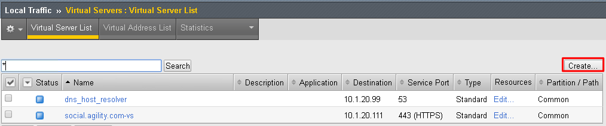
Enter the following values (leave others default) then scroll down to Resources
- Name:
api.f5agility.com-vs - Destination Address:
10.1.20.112 - Service Port:
443 - HTTP Profile:
http - SSL Profile (Client):
f5agility-wildcard-self-clientssl - Source Address Translation:
Auto Map
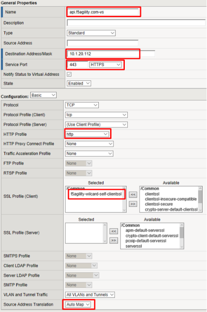
- Name:
In the Resources section, select following value (leave others default) then click Finished
Default Pool:
api-pool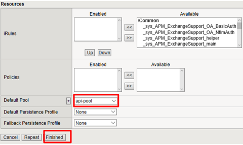
Test Configuration¶
On the Jump Host, launch Postman from the desktop icon
The request should be prefilled with the settings below. If not change as needed or select TEST API Call from the API Collection and click Send
Method:
GETTarget:
https://api.f5agility.com/departmentAuthorization:
No AuthHeaders: (none should be set)
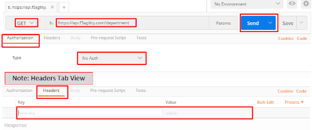
You should receive a 200 OK, 4 headers and the body should contain a list of departments.
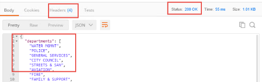
Note
This request is working because we have not yet provided any protection for the API.*
Note
If you get “Could not get any response” then Postman’s settings may be set to verify SSL Certificates (default). Click File -> Settings and turn
SSL Certificate Verificationto Off.*
Task 2: Authorization Server¶
Note
This task is performed on Big-IP #2 (AS)
Configure the Database Instance¶
Go to Access -> Federation -> OAuth Authorization Server -> Database Instance and click Create
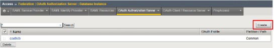
Enter oauth-api-db for the Name field and click Finished.
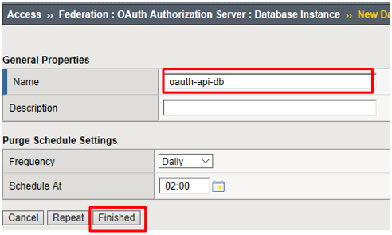
Configure the Scope¶
Go to Access -> Federation -> OAuth Authorization Server -> Scope and click Create
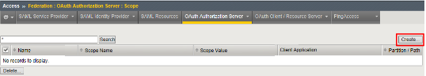
Enter the following values and and click Finished.
- Name:
oauth-scope-username - Scope Name:
username - Scope Value:
%{session.logon.last.username} - Caption:
username
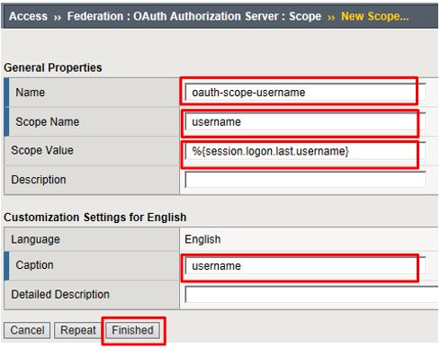
Note
This scope is requested by the Resource Server and the information here is provided back. You can hardcode a value or use a variable as we have here. So if the scope username is requested, we will supply back the username that was used to login at the Authorization Server (AS).*
- Name:
Configure the Client Application¶
Go to Access -> Federation -> OAuth Authorization Server -> Client Application and click Create
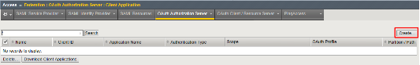
Enter the following values and click Finished.
- Name:
oauth-api-client - Application Name:
HR API - Caption:
HR API - Authentication Type:
Secret - Scope:
oauth-scope-username - Grant Type:
Authorization Code - Redirect URI(s):
https://www.getpostman.com/oauth2/callback
Remember to click Add
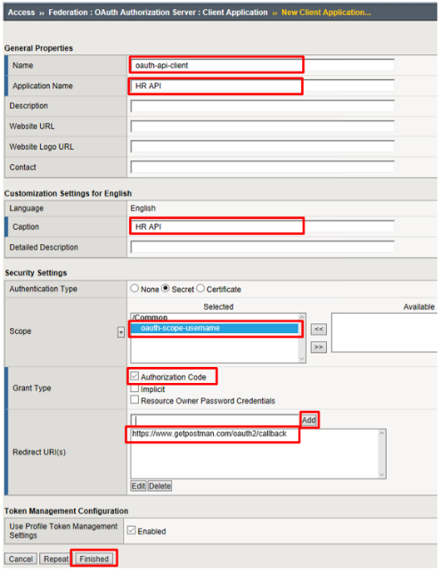
Note
The Redirect URI above is a special URI for the Postman client you’ll be using. This would normally be a specific URI to your client
- Name:
Configure the Resource Server¶
Go to Access -> Federation -> OAuth Authorization Server -> Resource Server and click Create
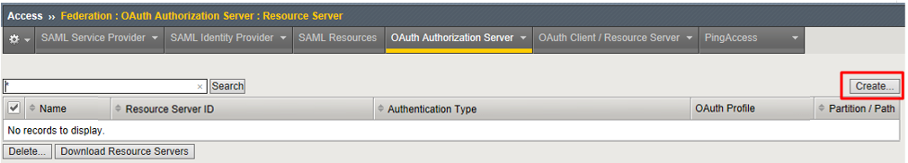
Enter the following values and click Finished.
- Name:
oauth-api-rs - Application Type:
Secret
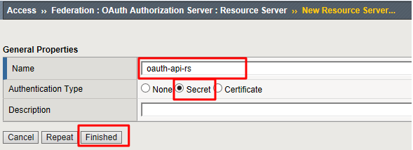
- Name:
Configure the OAuth Profile¶
Go to Access -> Federation -> OAuth Authorization Server -> OAuth Profile and click Create
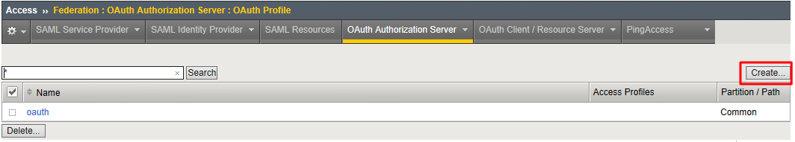
Enter the following values and click Finished.
- Name:
oauth-api-profile - Client Application:
oauth-api-client - Resource Server:
oauth-api-rs - Database Instance:
oauth-api-db
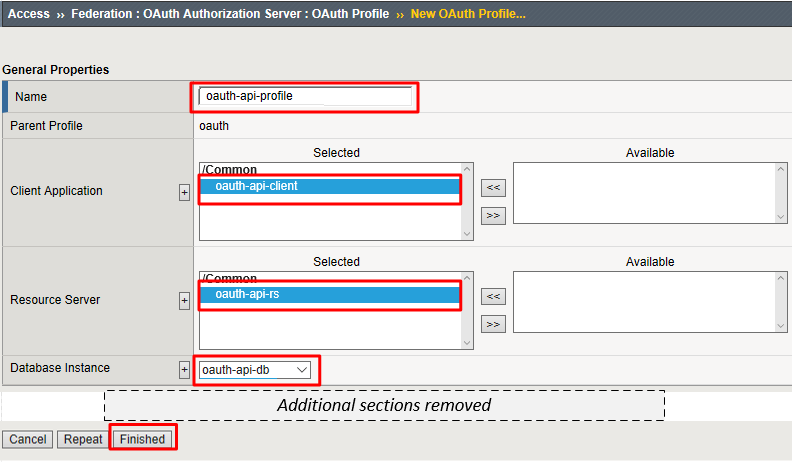
- Name:
Configure the APM Per Session Policy¶
Go to Access -> Profiles/Policies -> Access Profiles (Per Session Policies) and click Create

In the General Properties section enter the following values
- Name:
oauthas-ap - Profile Type:
All - Profile Scope:
Profile
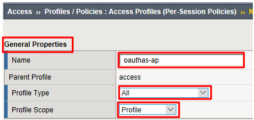
- Name:
In the Configurations section select the following value from the OAuth Profile drop down menu.
- OAuth Profile:
oauth-api-profile
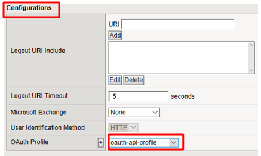
- OAuth Profile:
In the Language Settings section enter the following value and then click Finished.
- Languages:
English
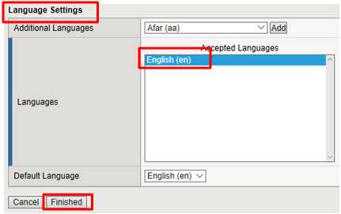
- Languages:
Click Edit on the oauthas-ap policy, a new browser tab will open.
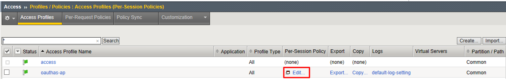
Click the + between Start and Deny
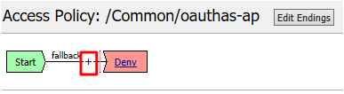
Select Logon Page from the Logon tab, and click Add Item
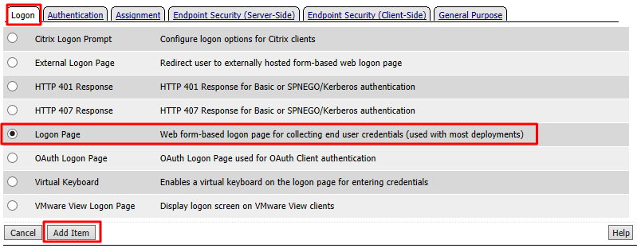
Accept the defaults on the Logon Page and click Save
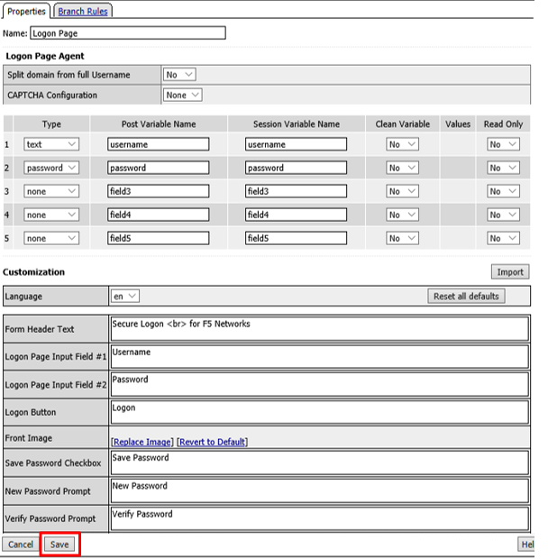
Click the + between Logon Page and Deny
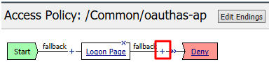
Select OAuth Authorization from the Authentication tab and click Add Item
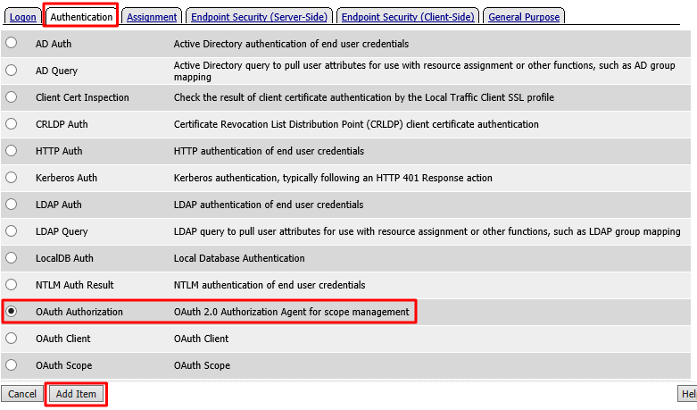
Accept the defaults for the OAuth Authorization and click Save
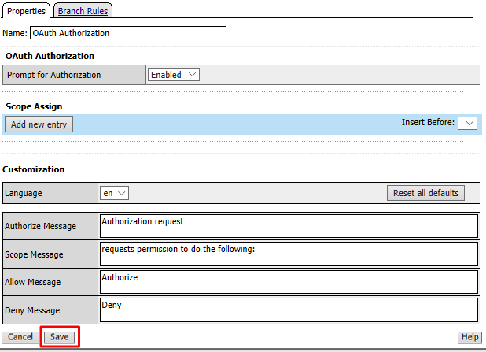
Click Deny on the Successful branch after the OAuth Authorization object, select Allow, click Save
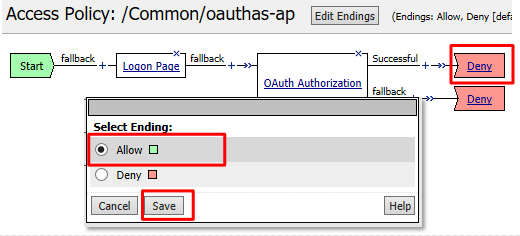
Click Apply Access Policy in the top left and then close the tab
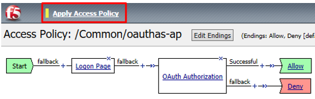
Note
We are not validating the credentials entered on the Logon Page, so you can enter anything you want. In a production deployment you would most likely include some process for validating credentials such as an LDAP Auth or AD Auth object, or perhaps limiting access by IP or client certificate
Note
This policy might also set some variables that get used as scope values. Thus, you could determine what the scope values are by utilizing the policy here.*
Create the Authorization Virtual Server¶
Go to Local Traffic -> Virtual Servers and click Create
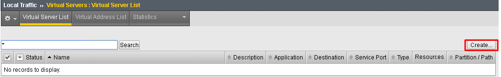
Enter the following values for the Authorization Server Virtual Server
- Name:
oauthas.f5agility.com-vs - Destination Address:
10.1.20.110 - Service Port:
443 - HTTP Profile:
http - SSL Profile (Client):
f5agility-wildcard-self-clientssl - Source Address Translation:
Auto Map
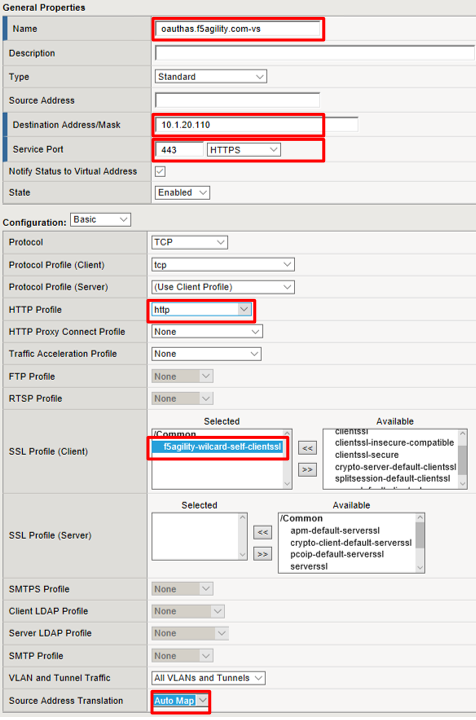
- Name:
Scroll to the Access Policy section, select oauthas-ap from the Access Profile drop down menu and then click Finished at the bottom of the screen.
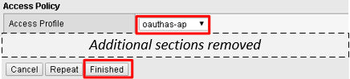
Task 3: Resource Server¶
Note
This task is performed on Big-IP #1 (RS)
Configure the OAuth Provider¶
Go to Access -> Federation -> OAuth Client/Resource Server -> Provider and click Create
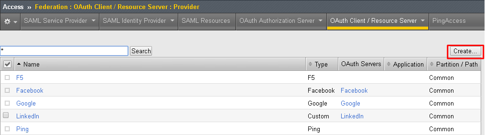
Enter the following values for the Authorization Server Virtual Server and then click Finished
- Name:
oauthas.f5agility.com-provider - Type:
F5 - Authentication URI:
https://oauthas.f5agility.com/f5-oauth2/v1/authorize - Token URI:
https://oauthas.f5agility.com/f5-oauth2/v1/token - Token Validation Scope:
https://oauthas.f5agility.com/f5-oauth2/v1/introspect
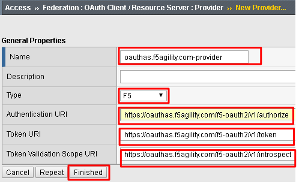
- Name:
Configure the OAuth Server¶
Go to Access -> Federation -> OAuth Client/Resource Server -> OAuth Server and click Create
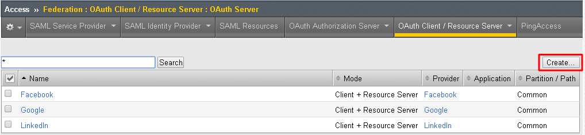
Enter the following values for the Authorization Server Virtual Server and then click Finished
- Name:
api-resource-server - Mode:
Resource Server - Type:
F5 - OAuth Provider:
oauthas.f5agility.com-provider - DNS Resolver:
oauth-dns - Resource Server ID: (see step 5) <Get this from Big-IP 2 -> Access -> Federation -> OAuth Authorization Server -> Resource Server -> oauth-api-rs>
- Resource Server Secret: (see step 5) <Get this from Big-IP 2 -> Access -> Federation -> OAuth Authorization Server -> Resource Server -> oauth-api-rs>
- Resource Server’s Server SSL Profile Name: apm-allowuntrusted-serverssl
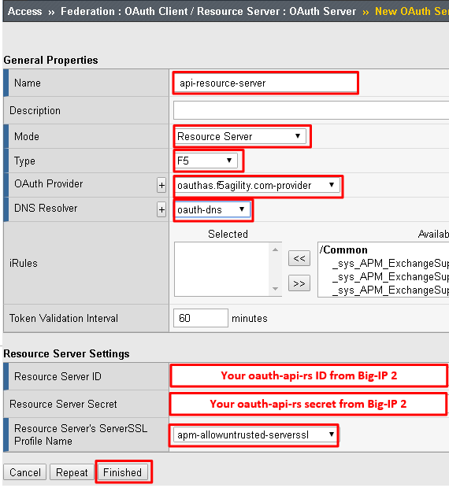
Note
We are using a custom serverssl profile to allow negotiation with an untrusted certificate. This is needed because our Authorization Server is using a self-signed certificate. In production for proper security you should leverage a trusted certificate (most likely publicly signed) and the apm-default-serverssl profile (or other as appropriate)*
- Name:
The values for step 4 above can be obtained by accessing Big-IP 2 and navigating to Access -> Federation -> OAuth Authorization Server -> Resource Server -> oauth-api-rs as shown.
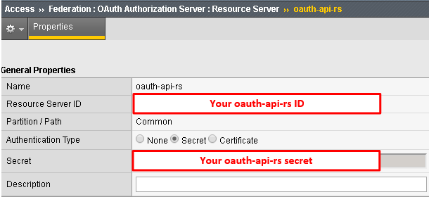
To configure the APM Per Session Policy go to Access -> Profiles / Policies -> Access Profiles (Per Session Policies) and then click Create
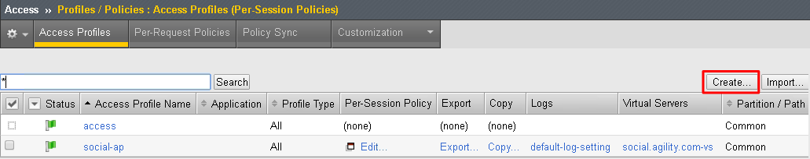
Enter the following values and then click Finished
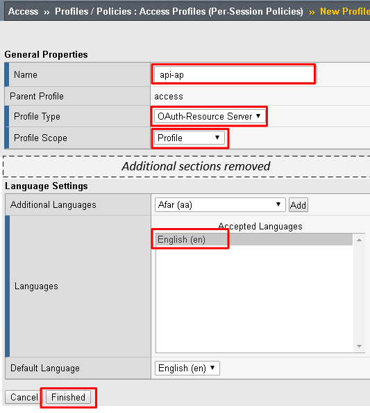
- Name:
api-ap - Profile Type:
OAuth-Resource-Server - Profile Scope:
Profile - Languages:
English
Note
User Identification Method is set to OAuth Token and you cannot change it for this profile type.
- Name:
Click Edit on the new api-ap policy and a new window will open
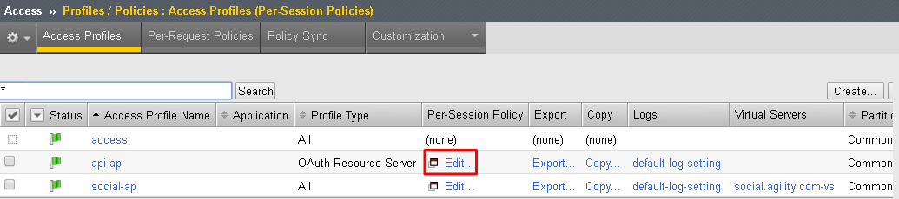
Click Deny on the fallback branch after Start, select Allow and click Save
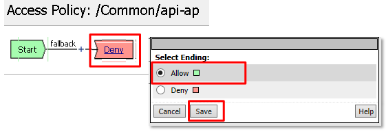
Click Apply Access Policy in the top left and then close the tab
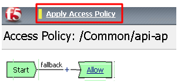
To configure the APM Per Request Policy go to Access -> Profiles / Policies -> Per Request Policies and then click Create
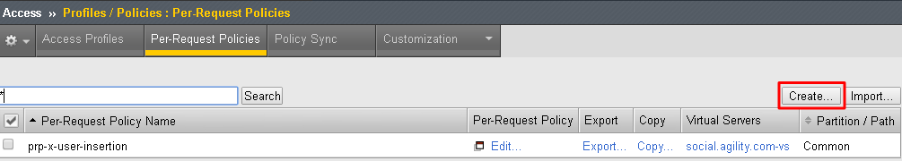
Enter api-prp for the Name and click Finished
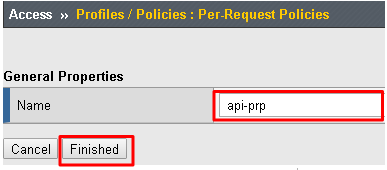
Click Edit on the api-prp policy and a new window will appear
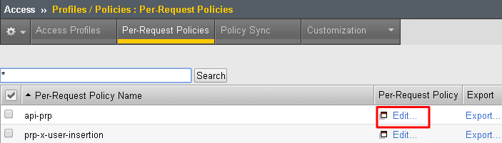
Click Add New Subroutine
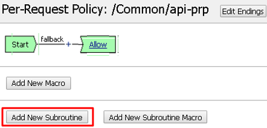
Leave the
Select Subroutine templateas Empty. Enter RS Scope Check for the Name and then click Save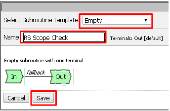
Click the + next to the RS Scope Check
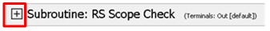
Click Edit Terminals on the RS Scope Check Subroutine
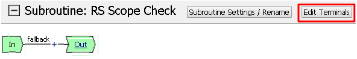
First, rename Out to Success, then click Add Terminal and name it Failure
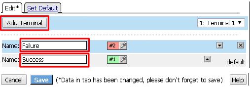
Go to the Set Default tab and select Failure then click Save
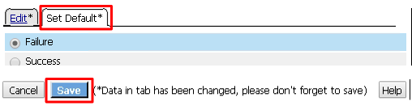
Click Edit Terminals again (it will ignore the order settings if you do this in one step without saving in between)
Move Success to the top using the up arrow on the right side then click Save
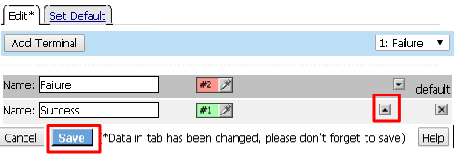
Click the + between In and Success, a new window will appear
Select OAuth Scope from the Authentication tab and click Add Item
Enter the following values and then click Save
- Server:
/Common/api-resource-server - Scopes Request: /Common/F5ScopesRequest
- Server:
Verify that the Successful branch terminates in Success and the Fallback branch terminates in Failure
In the main policy, click + between the Start and Allow
Select RS Scope Check from the Subroutines tab and click Add Item
Verify that the Success branch terminates in Allow and the Fallback branch terminates in Reject
Note
You do not need to “Apply Policy ” on Per Request Policies*
To add the APM Policies to the API Virtual Server, go to Local Traffic -> Virtual Servers and click on api.f5agility.com-vs
Scroll down to the Access Policy section. Change Access Profile from None to api-ap
Change Per-Request Policy from None to api-prp and then click Update
Task 3: Verify¶
On the Jump Host, launch Postman from the desktop icon
The request should be prefilled with the settings below (same as earlier). If not change as needed or select TEST API Call from the API Collection and click Send
- Method:
GET - Target:
https://api.f5agility.com/department - Authorization:
No Auth - Headers:
(none should be set)
- Method:
You should receive a
401 Unauthorizedand 3 headers, includingWWW-Authenticate: Bearer. The body will be empty.Note
Your API call failed because you are not providing an OAuth token. Both tabs shown
Click the Authorization tab and change the Type from No Auth to OAuth 2.0
If present, select any existing tokens on the left side and delete them on the right side. Click Get New Access Token
In the Get New Access Token window, if the values do not match then adjust as needed, and click Request Token
- Token Name: <Anything is fine here>
Note
If you’re doing this lab on your own machine and using self signed certificates you must add the certs to the trusted store on your computer. If you’ve just done this, you must close Postman and reopen. You also need to go to File -> Settings in Postman and turn SSL certificate validation to off.
- Auth URL:
https://oauthas.f5agility.com/f5-oauth2/v1/authorize - Access Token URL:
https://oauthas.f5agility.com/f5-oauth2/v1/token - Client ID: <Get this from Big-IP 2 -> Access -> Federation -> OAuth Authorization Server -> Client Application -> oauth-api-client>
- Client Secret: <Get this from Big-IP 2 -> Access -> Federation -> OAuth Authorization Server -> Client Application -> oauth-api-client>
- Scope:
- Grant Type:
Authorization Code - Request access token locally:
checked
Logon with any credentials, such as user/password
Authorize the HR API by clicking Authorize
You now have received an OAuth Token. Click the name of your token under Existing Tokens (left) and your token will appear on the right
Change the Add token to drop down to Header and the click Use Token. You will note that the Header tab (in the section tabs just above) now has one header in the Header tab which contains your Authorization Header of type Bearer with a string value.
The Header tab data is shown in the screenshot
Click Send at the top of the Postman screen
You should receive a 200 OK, 5 headers and the body should contain a list of departments
Note
This time the request was successful because you presented a valid OAuth token to the resource server (the Big-IP), so it allowed the traffic to the API server on the backend.
Task 4: Testing Session and Token States¶
Note
Parts of this task are performed on both Big-IP devices. Check each step to make sure you are working on the correct device.
Invalidate the Session¶
Go to Big-IP 1 (OAuth C/RS) -> Access -> Overview -> Active Sessions. Select the existing sessions and click Kill Selected Sessions, then confirm by clicking Delete
Go back to Postman and click Send with your current OAuth token still inserted into the header. You should still receive a 200 OK, 5 headers and the body should contain a list of departments.
Note
You were still able to reach the API because you were able to establish a new session with your existing valid token*.
Invalidate both the Current Session and Token¶
Go Big-IP 2 (OAuth AS) -> Access -> Overview -> OAuth Reports -> Tokens. Change the DB Instance to oauth-api-db.
Select all tokens, click Checkbox left in title bar and the click Revoke in the top right
Go to Big-IP 1 (OAuth C/RS) -> Access -> Overview -> Active Sessions. Select the existing sessions and click Kill Selected Sessions, then confirm by clicking Delete
Go back to Postman and click Send with your current OAuth token still inserted into the header. You should receive a
401 Unauthorized, 3 headers, no body, and theWWW-Authenticateheader will provide an error description indicating the token is not active.
Note
You can remove the header, delete the token, and start over getting a new token and it will work once again.*
Note
This time you were no longer able to reach the API because you no longer had a valid token to establish your new session with. Getting a new token will resolve the issue.